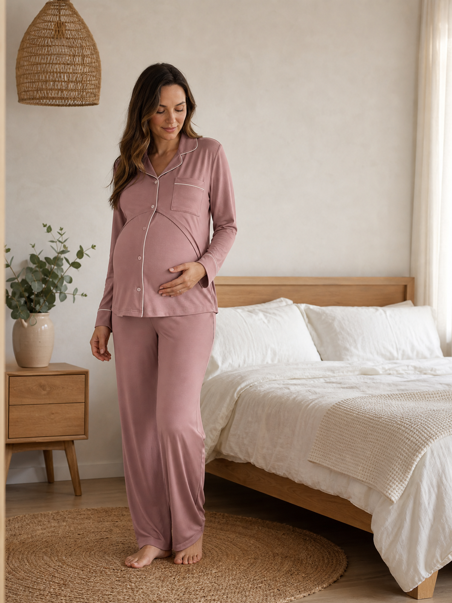
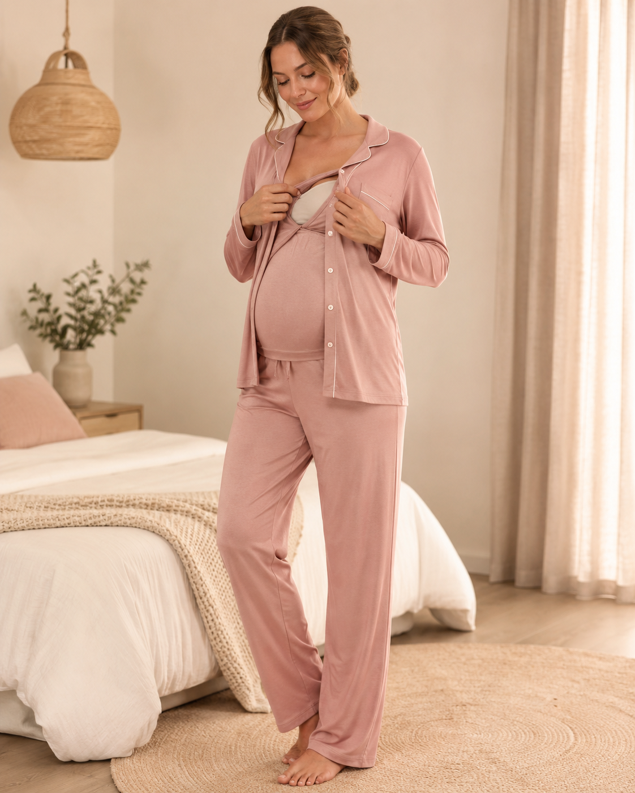
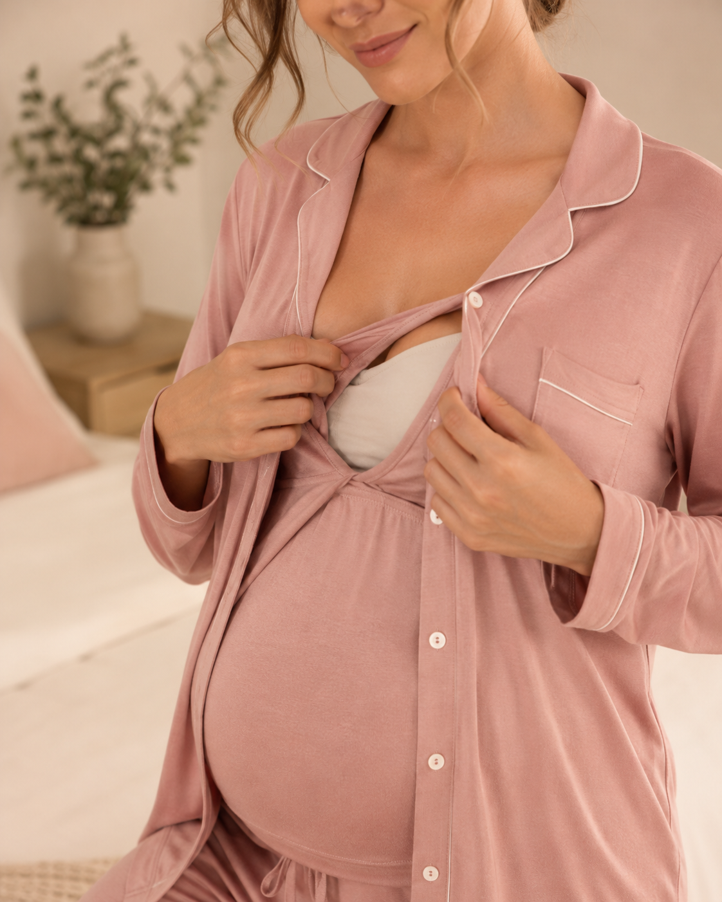
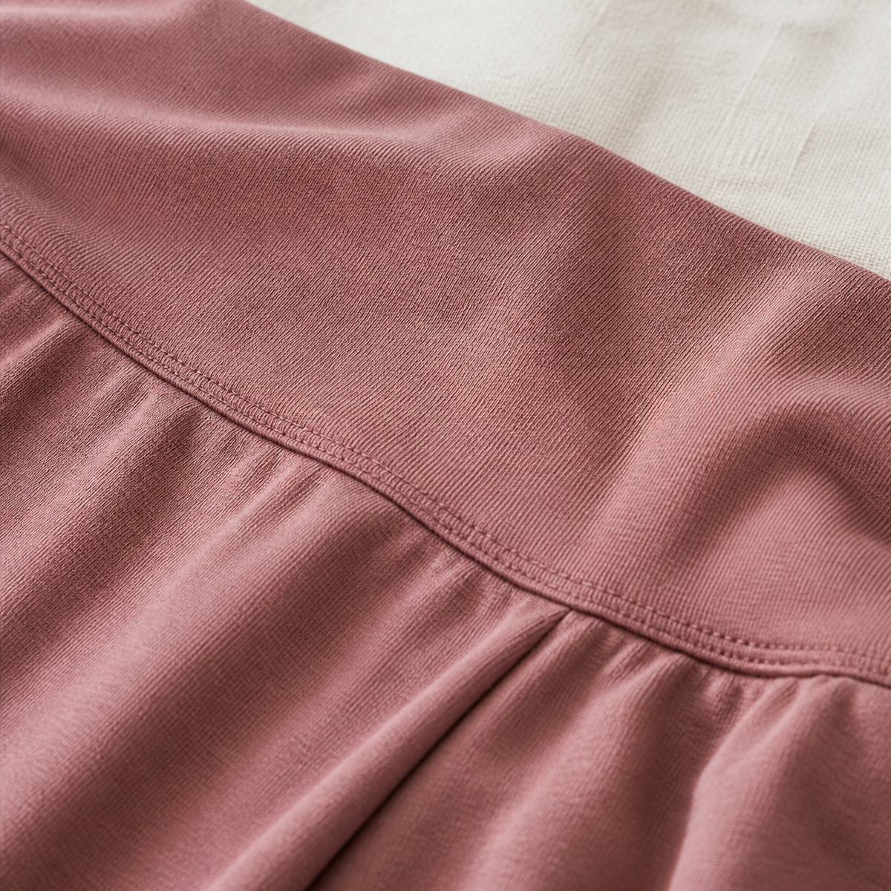

Maternity & nursing pajamas category
Custom Maternity & Nursing Pajamas for Private Label Brands
A B2B category page for buyers building maternity and postpartum programs: compare nursing-access foundations and over-bump lounge styles, review alternate views, then move into fabric, fit and branding requirements with less back-and-forth.

Each product card uses a model-first image, then switches to an alternate flat-lay or back view on hover.
Maternity & nursing starting styles
Maternity & Nursing Pajama Collection
Fabric direction for sourcing
| Fabric Route | Use Direction | What Buyer Should Confirm |
|---|---|---|
| Modal Spandex Blend | Soft-drape nursing sets and postpartum lounge foundations | Weight, pilling resistance, stretch recovery and customized colors |
| Bamboo Spandex Blend | Breathable, high-stretch sets with premium hand-feel | Composition ratio, GSM, stretch recovery and color swatches |
| Cotton Spandex Blend | Everyday maternity basics with stretch fit | Fabric weight, stretch percentage and color fastness |
| 100% Cotton | Skin-friendly maternity and postpartum basics | Yarn count, construction, hand-feel and shrinkage standards |
| Ribbed Knit Jersey | Texture-led lounge capsules and layering pieces | Rib gauge, recovery, opacity and color range |
B2B development scope
What the first inquiry should contain01 02 03 04
Style, nursing access, fabric and branding — in that order.
Select starting styleChoose a nursing-access or over-bump lounge foundation as the development reference.
Confirm fabric and fitComposition, GSM, hand-feel, stretch, over-bump waistband and size grading are confirmed by style.
Lock branding packageWoven label, care label, hangtag, size sticker, polybag and carton requirements.
Approve sample for bulkThe approved sample becomes the production reference before bulk scheduling.



Maternity & nursing inquiry
Turn a selected style into a sourcing brief.
Share your target quantity, market and development requirements so our team can prepare the next sourcing steps.
Starting style / reference imageCompany, quantity and target marketFabric, color and branding needsTarget launch timing and sample request